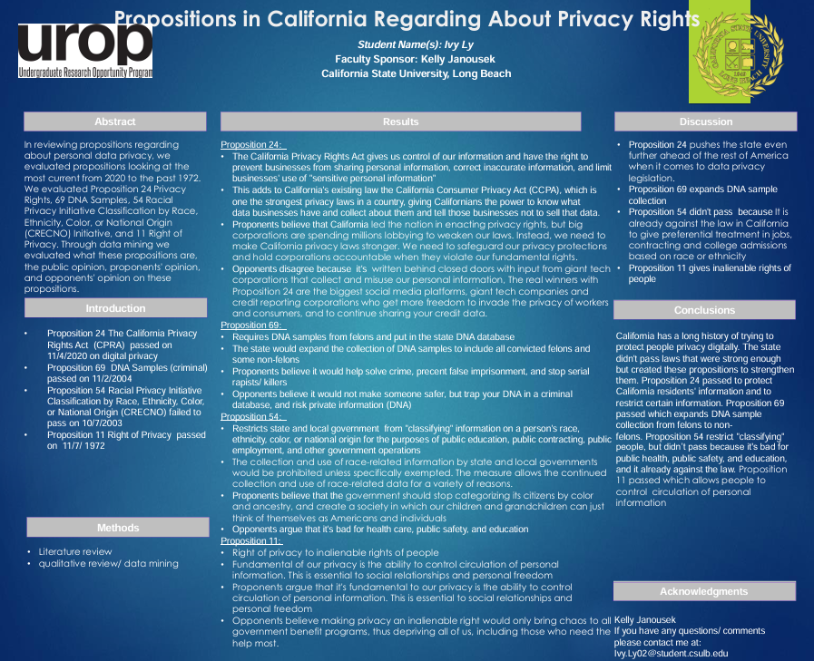

Research Projects
Comparing Human versus Computer Synthesized Voices: Effects on Student Cognitive Engagement in Instructional Videos
Presented at the 19th Annual CSULB HFES Student Research Conference. The study examines whether the properties of online learning, such as narration voice, influences the cognitive engagement of students when viewing online lectures.
Link: Poster


Propositions in California Regarding About Privacy Rights
Showcased at the UROP Spring 2021 Virtual Research Symposium. Reviewed Propositions regarding about personal data privacy between 1972-2020. These Propositions where evaluated based on purpose, the public opinion, proponents' opinion, and opponents' opinion.
Link: Poster